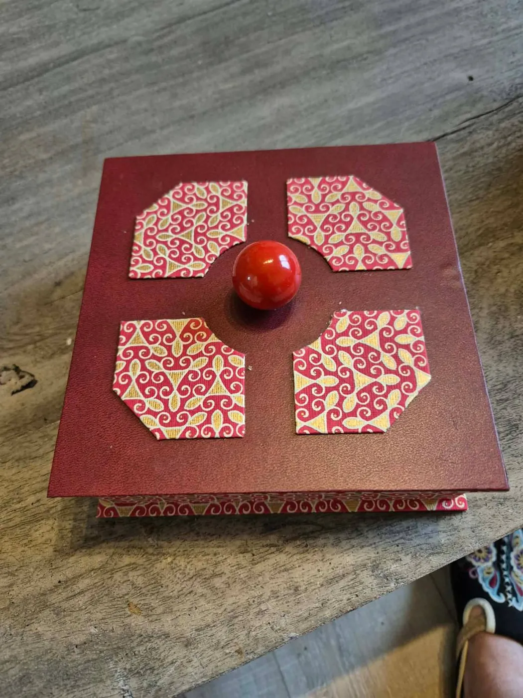

Cartonnage d’art · fait main
Des boîtes et des carnets, découpés à la main.
Coffrets, boîtes, carnets, vide-poches et marque-pages : chaque pièce est montée en carton, habillée de papiers choisis, puis ornée de motifs découpés un à un au scalpel.


Chaque fenêtre est découpée à la main, puis on glisse dessous le papier qui fera tout le charme.
Les créations
Pièces uniques, faites une à une
Chaque boîte, chaque carnet est assemblé et découpé à la main : aucune pièce n’est tout à fait la même que la précédente.
Carnets à motifs
Couverture rigide découpée, papier glissé dessous, fermeture élastique.

Boîte coulissante
Noire et cuivre, fleurs découpées et tiroir garni.
Boîte étoilée
Douze pans, couvercle et côtés découpés d’étoiles.

Coffret marque-pages
Deux marque-pages dentelle avec leurs pompons, en écrin.

Boîte à bijoux
Rouge et or, bouton perle, papier à volutes dorées.
Vide-poche rosace
Jaune soleil, rosace découpée sur papier moucheté.

Cadre fleuri
Double biseau, liseré de papier fleuri.
Le savoir-faire
Du carton brut à la pièce finie
Le cartonnage est un métier de patience : quelques heures, parfois plusieurs jours, pour une seule boîte.
- La structureLe carton est coupé au millimètre, puis assemblé et renforcé pour durer.
- L’habillageToile, simili-cuir ou papier texturé : chaque face est recouverte à la main.
- La découpeLes motifs sont tracés puis découpés un à un au scalpel, la partie la plus minutieuse.
- Le papier cachéUn papier imprimé est glissé sous les découpes : c’est lui qui fait chanter le motif.
Sur commande
Une boîte rien qu’à vous
Une couleur, un format, un motif ou une occasion particulière : Lou crée aussi sur commande.
- Coffret cadeau pour une naissance, un mariage, un anniversaire
- Boîte à bijoux ou à souvenirs aux couleurs de votre choix
- Carnets et marque-pages à offrir, en série pour un événement
- Cadres assortis à votre intérieur
Où trouver les créations
En boutique, sur les marchés, et ici
- CambraiEn dépôt dans une boutique d’artisans créateurs.
- ParisEn dépôt dans une boutique d’artisans créateurs.
- Marchés de NoëlTrois marchés cette saison : les dates sont annoncées sur Facebook.
Contact
Une pièce vous plaît ? Écrivez à Lou.
Pour réserver une création, commander une pièce sur mesure ou savoir où la trouver.
Téléphone et e-mail de Lou à ajouter.
L’art du cartonnage
par Lou
Créations faites main · Hauts-de-France